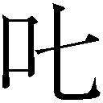
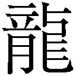

| 小学館電子全集 特別限定無料版 『宮尾登美子 電子全集』 | |
| 宮尾登美子 | |
| 株式会社小学館 (2018) | |
小学館ｅＢｏｏｋｓ
宮尾登美子 電子全集 特別限定版
宮尾登美子
目次
付録
表紙写真／児玉成一
第一部
一
喜和は、朝、出がけの岩 伍 からいいつけられていた夏物を出すために、押入れから支 那 鞄 を引張り出したとき、ふと、あ、もう間 なしに楊梅 売りの姐 さんが出て来るよ、と思った。
去年も確か夏冬の入替えの日、上から畳み込まれて底の一、二枚は柳 行 李 の編目が凸 凹 についた岩伍の帷子 や、絽 の飛ばしを部屋のなかに掛け連ねていたとき、階下 から菊が跳ね上って来て、
「来ました、お母さん。十市 の楊梅 が」
と、うわずった声で知らせて来た。
去年は、行李の底の衣類についた小波 のようないちめんの皺 は火熨斗 をかけても俄 に取れなくて岩伍に られ、そのあと、隣の仕立屋のお竹さんに教えられて男 衆 の亀 を連れ、種 崎 町へまで支那鞄というのを買いに行った。それは昔の長持を小さくしたような木の箱型で、内部は更 紗 模様の紙を、外側は青い金 巾 を貼 ってあり、いいことには蓋 がかっちりと閉って、ぴちんと小気味よい音をたてて錠のかかる事だけれど、ひとつ都合の悪いのは、行李のように際限もなしの詰め込みが利 かないのである。
それでも長着など二つ畳みに、平らに寝かせられるのは便利であった。今年は衣 紋 竿 に掛けて夕方まで風を通せば樟 脳 の匂 いも散り、いつ、さあと岩伍にいわれてもすぐ差出せる、と喜和は安 堵 の思いで支那鞄の底に落ちこぼれている、箆 の先のように薄くなった去年の樟脳を拾い上げた。
喜和がいま坐 っている二階の東窓からは、往来を一目に見下ろすことが出来る。
軒の詰んだ狭い往来にはいつも殆 ど一日中もの売りの声が流れ、絶える間もない賑 やかさだけれど、毎年、夏の初めにやって来る楊梅売りだけは、この緑 町 四丁目に限って呼び声を上げない。十市の姐さんは地下足袋を真白にして二丁目、三丁目を通り抜け、まっすぐ富 田 の格 子 戸 を入って天 秤 で担 った楊梅籠 を下ろすのである。
富田では楊梅の走りを、毎年、この十市の姐さんから一度に二斗余りも買う。
土間に据 えた楊梅の籠から、微 かに潮の香の混った甘さが辺りに流れ始めると、喜和が声を掛けるまでもなく、待ち兼ねていた富田の家の者はわーっと籠の廻 りに集って来る。
底にたっぷりと厚く青い裏白 を敷いた竹籠の中は、紫 蘇 いろに濃く熟れた、あん玉ほどの太さのまるいやわらかな実が、深い光沢 を見せながら平らに積み重なっている。なかに、天秤に揺られて潰 れたいくつかの実も見え、それから出た汁はよく醸 された酒のように芳 醇 な香りを立てる。
十市の姐さんは皆に取巻かれ、自信ありげな振舞いで一升枡 を取出すと、楊梅の実を 搔 き分けて籠の中に枡を据え、丈夫至極な、躊躇 ない手付きで入れ始める。枡の中へ初めはそっと転がし、次第に盛り上げ、やがて指先はよく出来た髪のおくれ毛を搔 き上げるように叮 嚀 に、高く高く三角の山形に築 き上げる。かたわらでは若い衆 がかねて洗っておいたむろ蓋を差出していて、十市の姐さんは枡の二辺に掌をあてがいながら、その中にそろりと、ころころと、どっぷりと空けるのである。
そのたびに富田の家の者は「ひとーつ、ふたあつ」と声を揃 えて数え、姐さんは姐さんでちゃんと心得て、
「そら、よう熟れちょります」
やら、
「そら、実は太いが、核 は小 んまい」
やら、
「品は保険付き、亀蔵桃の飛切り」
やら、景気をつけるのであった。
楊梅 は、土佐の海岸地方に生 る特有の果実で、思わず 頰 を絞るほどの美味 さがある代り、これほどに傷 み易 いものもないといわれている。朝 捥 いだ実は昼下りにもう汁が滲 んで饐 え始め、じき蚊つぼが立って夕方には異臭を放ち出す。出盛りの季節もまた極く短いもので、ぱっといちどきに木が黒むほど熟れたと思うと、僅 かな風にもぼたぼたと首を振って落ちてしまう。桃には黒い亀蔵と白桃とがあり、富田では岩伍がとくに黒桃の太いものを好む関係から、十市でもこの姐さんの家の木のものばかりを買うのであった。楊梅は隔年毎 の結実といわれるけれど、不作の年でも、十市の姐さんは富田の分だけは何とか籠に充 たして届けてくれるのである。
その桃を、もう五、六年も前から富田ではまだ走りの季節に、町内の殆ど全部へ配っている。下町では季節の初物を、七十五日命が延びる、と有難がる慣 わしがあり、とりわけ捥 ぎ立ての楊梅は夏病み除 けとして大 仰 に喜ぶ。
十市の姐さんから荷を受取るなり、喜和は先 ず貝皿に入れて家中の神 棚 に祀 り、ついで岩伍の分を風通しのよい釜 屋 の軒先へ吊 ってから町内へ配る段取りをする。味 噌 漉 しの底に奉書を敷き、表通りは世 帯 の人数によって目分量で二合入れたり三合入れたり、裏長屋は均 らしで皆二合見当を入れ、若い衆たちが、
「さ、初物じゃ。いっときも早う食べてつかはれ」
と手分けして配り歩くのである。
味噌漉しの底の奉書が楊梅の汁でどっぷりと紫に染められ、表通り十八軒、裏長屋四十軒を洩 れなく配り終えると、若い衆たちは互いに肩を扱 き合うようにして釜屋へなだれ込んで来る。
甘い汁をたっぷり含んだやわらかな楊梅の実は、決して水で洗ってはいけない。粒を重ねないようにむろ蓋に粗く並べ、喜和が指の股 からパラパラと塩を振ると、若い衆がむろ蓋を持ち上げて水平に揺する。楊梅はむろ蓋の中でころころと転がり、ぶつかり合いながら塩に馴 染 んでいっそう甘味を増す。先ず、いまにも弾 けそうに黒く膨らんだ大粒から先に手が出て、「楊梅の選 り食い」が始まり、ときには口の中に三粒も四粒も詰め込んで逸 り、やがて若熟れのやや小粒のものまでも悉 く食べ終る頃 、かたわらの丼 鉢 には、 嚙 み捨てられた果肉が赤い古綿のようにくっついた、小さな核が堆 く積み上げられる。
「楊梅食うに、核 を出す馬 鹿 があるか」
という通もいるにはいるけれど、核を 吞 み込めば便通が苦しくなるのは焦 れの大食いたちが誰しも経験していることで、やはり、舌の先で核を弄 ぶようにしながら果肉だけを食べるのが安心なのであった。
十市の姐さんは喜和にミカン水などを振舞われ、暫 く休んで行くこともある。
若い衆たちは、姐さんが女ながらも十市村の木 遣 の名人であることを知っていて、
「姐さん、あの楊梅はえーえ、というのを一丁やってや。呼び声を聞かんことには食ったらしゅうないわえ」
と頼むと、姐さんは羞 みながらも嬉 しげに目を細め、被 っている手 拭 の前をちょっと摘 んで下げてから、
「はあ、はあ、その筈 ですらあね」
と咳 払 して声を張り上げる。
「ええーえ、楊梅はえーえ、
今朝採りの十市の楊梅、
潮風によう吹けた桃はえーえ、
亀蔵桃の粒揃い、一番 ええがー」
と、ここまで引伸ばし唱 ってから、あと、濁 み声 で捨 科白 を吐くように、
「早う買わんと饐えるが」
と早口で呟 くのである。
それが効いて、前半まことに朗々とした節 廻 しに聞き惚 れていた誰も、あとのいいぐさの可笑 しさに吊り込まれて思わずにっこりしてしまう。
十市の楊梅が入ると、岩伍は外に出ていても必ず早く帰った。喜和が使いを走らせることもあり、自分から、
「今日辺り、もう来るかも知れんと思うて」
といい当てて帰って来ることもある。
喜和に、
「豆腐屋の茂八ちゃんには丈夫に（たんと）入れてやったか」
「イービーの先生は忘れざったの？」
「羅宇 屋 の松さんには？」
と日頃気に掛けている家をいちいち糾 し、喜和が、
「はあ、まあ皆えらいこと喜んで......
大将によろしゅうにといいよりましたと」
──棒堤の硝子 工場へ通っているポペン吹きの兼やんは、先ずお仏 壇 に供えたし、歯替屋の姐さんは涙ぐんで押 戴 き、車力引 のどん平さんは、「これ、これ」といいながら飛び付いてその場であっという間に食べてしまい、欲深で通っているメリヤス行商の浜田の姐さんは、三合の桃に何と大きなえび笊 を出して来て受けたそうな、と若い衆たちに聞いたとおりを告げると、岩伍は、「そうか」「そうか」と頷 き、それから、かたわらに手 拭 きの濡 布 きんを喜和に持たせ、さも旨 そうにときどき舌を鳴らしながら、好物の楊梅をつまむのであった。
喜和は、今年は十市の姐さんにいつもより多めに買い、上 町 の吉 沢 医院の先生にもこの楊梅を届けてあげてはどんなものであろう、と思った。
十七になる長男の龍 太 郎 が今年正月から長い風邪を引いていて、もうずっと先生にお世話になっている。十七ともなれば女親の喜和ではとかく楫 が取り難 いし、それに生来気 随 者 である龍太郎を、先生は宥 めたり賺 したりしながらまことに親身によく診て下される。楊梅も十市の亀蔵の走りなら先生もさぞ喜んでつかされるであろう、と思いついて、すぐまた、
「下町でこそ喜 るものじゃけんど、上町の上 品 た暮しの先生が楊梅など口になさるろうか、矢 庭 に持 て行 て却 って迷惑なさりはすまいか」
と考えるとちょっと気懸りになり、こういうときはこの界 隈 で一番古顔の、角 の安岡の姐さんに聞くに限る、と思った。
喜和は、支那鞄から取出した縮 や麻や、帷子の単衣 を衣紋竿に掛け分けてから階下へ下りた。今朝菊にいいつけ、石 水 の髪結 さんの番を取るよう手配してから髪を洗っていたので、いまから安岡へ寄って暫く談 義 してゆけば恰 度 の時刻になる。この近辺の事なら、一言安岡へ声を掛けておいたほうが安心なのであった。
階下では裏長屋の為 吉 やら勇やら新太などいつもの顔が三、四人見えていて、皆で菊と絹を嫌 がらせては笑い声を立てているところであった。
毎度の事ながら、飯 刻 を過ぎると富田の釜屋では大抵こういう按 配 になる。閑 な男たちが集って来ては他愛 もない談義に耽 り、若い娘の嫌がる話にまで落ちては、それを水仕場のふたりに浴びせかけては 婾 しむのである。普段から無口な絹が相変らずむすっとしているかたわらで、菊は二人分を引受け、顔を真 赧 にして懸命で応酬している。土間に踏 張 って立っている菊の足の指の、水 仕 履 きの濡横緒がいまにも切れそうなほど、力んで開いているのを喜和は上から目に留めて、
「若い娘のくせに、知らん顔しておればええものを」
と胸の内で心配する。日頃近所の子供たちが何かにつけて、
「八 金 八 鷹 、富田のお菊」
と囃 し立てているのが、こういう場合喜和は必ず思い出されて来る。
八金とは、女 子 のくせに男のお宝を八つも着けているようなお転 婆 を土佐ではそういい、普通、女の子は八金と呼ばれただけで恥じ入るものなのに、菊のはその下にまだ鷹を八つも飛ばせたように猛 々 しいという超 が付いている。菊は恥じて縮こまるどころか、それをいわれるといっそう燃え上って見境もなくやり返し、止 どまるところを知らないようなふしがあった。それでも、お母さんと呼んでいる喜和にだけは従順で、決して刃向って来ないのは、菊は菊なりに自分の弁 えを持っているものであろう。
釜屋に下りて来た喜和を見て、菊は喧 嘩 の続きのような途方もない大声を上げた。
「いやっ、お母さん。
私 、大事なこと忘れちょった。どうしよう」
この子が困ったときに出る癖は、はし、はし、はし、と濃い眉 を小刻みに寄せることで、なお困ればその上に忙 しない瞬 きまでする。
「なに？」
と喜和はおおよそは察しがついて、
「石水の番は取ってくれたろうねえ」
「番は取りました。けんど......」
「けんど、なに？」
「あの、あの」
菊は瞬きしながらしきりに目を泳がせていい澱 んでいたが、
「あの、髪道具をまだ届けちょりません」
と小さな声でいった。
「髪道具ならええわね。重いもんじゃなし。私 が自分でいま持 て行くきに」
喜和はいってから、水屋のわきの、油の染 みた糸引のたとうを見た。
今朝髪を洗う前、菊を呼んで握 鋏 で元結 を切らせたが、そのとき、汚れの来た絞りの手絡 を揮発油で洗うことを教え、序 に櫛 も 筓 もよう拭 いてから石水へ届けておいてつかはれ、と頼んであったのに、たとうは朝広げたそのままの姿でいる。石水へ届ける前にいいつけた事もはや忘れちょる、と思ったが、喜和は黙って水屋の前に膝 をつき、自分で髷 の型、根かもじ、毛たぶ、手絡 、櫛筓 、と順に揃えた。
この家では、喜和が気付いた事をひとつひとついいたてれば限 りがない。風に吹き寄せられたような人間ばかり多勢いるのだから、三つ頼んで一つしか守って貰 えないのは承知だけれど、菊が真っ正直でないものいいをすることや、絹がふくれてものをいわなくなることや、或 は喜和が知らないとばかりに、男 衆 の亀 が手荒い扱いしてよく鉋 や鑿 の刃をこぼすことや、米 が頻 繁 に摘 み食 いをすることなど、喜和の胸ひとつに畳んでおくにはあまりに多すぎる日常の出来事について、喜和はいつの間にか、見ても思っても今はもう口には出さなくなっている。
べつに覚悟というほど大 袈 裟 なものでもない。真実 を話してみよ、とたとえ岩伍に詰め寄られたとしても、前を繕って小利巧に口を割らぬのではなく、「話してもどうなるもんじゃなし」と思える。真実のところ、気に入らぬ事を拾い上げれば際限もないし、岩伍と喜和は別としても、家中難癖のつかぬ人間は一人もいないといっていいのであった。では岩伍にいちいちいい上げて、その威令でよくなるかといえば、始終出勝ちの岩伍ではあとの見届けが利かず、喜和だけではとてもおぼつかない。人間が多勢集れば、そこに余程小うるさい年寄りの宰領でも常時居 らぬ限り、ある程度は家の中の締りのなさも仕様がないもの、とは喜和が此 の頃 覚えた了 簡 のひとつだともいえる。長い年月のうちには、いろいろな事を見ても聞いても喜和の胸の波立ちはずっと少くなり、今は大抵のことなら心に引掛からず、さらさらと滞りなく過ぎて行くようであった。
喜和は片手を後に廻して根深帯のかたちをちょっと直し、素足にゴム付きの直 履 を履いて家を出た。
広くもない往来の向い廂 から、盲 の茂八ちゃんの吹くかすれた尺八の音が流れて来る。
年取ってから目をわるくした茂八ちゃんは、一日中殆ど何もせず、往来の窓に凭 れて尺八ばかり吹いているが、一向にその尺八も上達するでなく、唯 一 の楽しみは、料理屋のおちょぼに出している娘が父親の好物の、立て絞 の入った薄塩のうるめを提げて、折々顔を見せに（声を聞かせに）戻ることだという。
かたわらでは、赤子の手首を見るような、きっかりといせの入った太い手の姐 さんが、亭主のことを、「この極道されが」「このただ飯食いが」と口汚なく罵 りながらもくるくると体を使ってまことによく働く。家業は豆腐屋だけれど、朝二時起きで豆腐を挽 いたあと、夏は搔 氷を売り、冬になると氷台の脇 の竈 に火を入れて焼芋を売っている。二つの素焼の竈は、吉沢医院の壁にある人体の血管図のようなこまかい亀 裂 が入っているものの、とても巌 丈 に出来ており、寒い日などこの店の前を通っただけで、煖 かい竈の温 みがおんおんと往来にまで伝わって来る。
喜和は、青 海苔 を振り掛けた香ばしい切焼も好きだけれど、姐さんが熱い小砂利の中から丸焼芋を木 杓 子 で搔 き出す、ちゃり、ちゃり、ちゃり、ちゃり、というあの音を、秋口になると待ち兼ねるように思うのであった。姐さんの、焦 げて指先の出た軍手で搔 き出されるおいらん芋は水飴 のように甘く、縦にほろほろと割れる栗 芋 は咽喉 に詰まるように美味 しい。一銭で買えばおまけに小指ほどのびんつけ芋まで添えてくれて、菊と絹と女三人、昼下りの腹拵 えには恰度の量になるのであった。
緑町四丁目では、この界隈に一軒だけ二階建ての富田が町内のほぼ真中に当っている。
上 の方角に向かってすぐ隣は半 間 の路地を置き、天井からぶら下げた躾 糸 の束の廻りにいつも二、三人の縫子が群がっている、仕立物請 負 いの足のわるいお竹さん家 、その上隣が喜和とはよく往来 のある煎 餅 屋 の坂本である。
坂本の兄さんは気合のいい人で、夏冬通じていつも赤 褌 一本の素っ裸、炭火のよく熾 った煉 瓦 の炉の前に坐 って、柄 の長い煎餅焼機をしっしっしっと吹きながら手 品 師 のような早さで操り、焼けた煎餅をしゅっと 剝 いでは姐さんに投げて寄 越 す。しっしっしっと吹き、ほいほいほいと投げて寄越す兄さんの傍 で、姐さんはしっとりと黙ったまま、鈴だの腰付けだの指 環 だのの景品を煎餅の中に包み込んでは三角に口をつまみ、封をしてフクトクを作り上げてゆく。姐さんは無口だけれど気が置けず、これも数 口 を叩 かない喜和とはどこか通じるものがあって、喜和は此処 と安岡へはときどき気晴しの談 義 に出掛けるのであった。ポペン吹きの兼やん家 はその坂本の隣、それから電信工夫をしている奥内などを過ぎて、三条通りと行き交う角の左は質屋の松村で、右は枳殻 の垣 を廻 らせた甕 屋 の小松になる。
喜和は、楊梅 に限らず町内に配り物をするとき、この甕屋だけは配るまいか、と毎度躊躇 う。一家が郷 の出で、根っから下町人ばかりのこの緑町とは少しく肌 合 の違うこともあるけれど、後妻だと聞く姐さんに愛 嬌 のあの字もないのが妙に小 癪 に障る折もないではない。
ど太い車力に甕 やら土管やらを山に積み、兄さんが引いて姐さんが後押ししながら遠い安芸 の町から運んで来た翌日は、往来いっぱいに藁 屑 や縄 の切 端 が散らばり、風が吹くと高く舞い上って富田の庭まで降って来ることもある。姐さんはそのことを皆に断りもしないし、今度会ったときでも白粉 っ気のない顔の怒り肩を振って、黙って擦れ違うだけなのである。その代り、町内の談義いいの仲間には加わらないから蔭 口 をきかれる心配はないけれど、同じ無口でも、甕屋のは貝 殻 の固さがあり、坂本の姐さんのはこちら側までやんわりと丸く包み込んでくれる、芯 からの温みがあるように思える。
荒物雑品の安岡は甕屋とは反対側、お稲荷 さんの坂から新道へ 繫 がる緑町との四つ辻 にあり、赤いペンキでのり、と書いた、中天の満月ほどの丸いブリキ板が軒にふらりふらり揺れているのが目印になっている。
喜和は茂八ちゃんの家の前を過ぎ、将棋集会所、味 噌 屋 、薪 屋 、羅宇屋など、それぞれをちょっと覗 きながら、のりの看板を頭で除 けて安岡へ入った。この店は雨 合羽 やら油紙など梁 に吊 してあるから、入るとぷんと油の匂 いがする。上町の傘 屋 も桐 油 が匂うけれど、あれは塗り立てでやや強 く、こちらは塗って日 数 の経 っている品だからか、こなれたいい匂いである。
「姐さん居りますか」
と声を掛けると、箒 や炭籠 や杓子や鍋 まで思い出し放題に積み重ねてある奥からにゅっと顔を出したのは兄さんのほうで、
「あれはいんまさっき、紺屋町 に出ましたが......」
といっておいてすぐ追いかけ、
「何も彼 も自分がやらんとこの店が立っていかん、とやかましゅうにいうて......」
と言訳めいた気弱な微笑を泛 べた。
口八丁手八丁と人も評判し自分もいい、町内の交際 い万端は私 に聞いて知らん事は一つもない、という姐さんは、話の序 に必ず、
「うちのは糞 役にも立ちゃあせんきに」
と付け加えるのを忘れない。兄さんは体格のいい男なのに、姐さんにやり込められてばかりいるせいでだんだん縮まって小さくなった、と町内が噂 する。今日も、大きな図 体 の兄さんがうろうろするのを小 柄 な姐さんが押 除 け、風 呂 敷 抱えてさっと小 敏 く飛び出したさまが目に見えるようで、やがてその重い荷を負うて、四方八方大声で賑 やかに鳴き渡りながら戻って来る姐さんを思うと、喜和はひとりでに笑いがこみ上げて来るようであった。
茂八ちゃん家 や安岡に限らず、この町内では人前でも平気で連 合 いを扱 き下ろす、分 立 ちの女房が多い。それでいて男が手を振上げる様子もないところを見ると、あれはあれで惚 気 のうちなのだと裏を知っていう人もある。喜和などそう聞いても、岩 伍 に向って口答えひとつ返した覚えのない者は、矢張り男の気弱な微笑を見ると少しばかり気の毒でもあった。
兄さんには、急いだ用事じゃないきにまた寄ります、といい、お稲荷さんの大 銀杏 が影を落しているだらだら坂を、道の脇に寄りながらゆっくりと登った。
坂の上は大川だけれど、潮が来ているか引いているかは登りながらでも水の音で判 る。たっぷんたっぷんと重く石垣に当る音は満潮で、蒸気船が丸い輪を吐きながら通った後でもぴたぴた、としか音が響いて来ないのは、遠く干 ているときなのである。岩伍の釣 舟 はここに舫 ってあり、大潮のときなど、道すれすれにまで浮き上っては隣の舟と舷 が擦れ合うのが、坂の下にいても聞くことが出来るのであった。
お稲荷さんの片側は赤いポストのある煙草 屋 で、石水はその隣にある。
喜和が石水美粧院、と書いた刷 硝子 の戸を押すと、仕上台でお師匠 んの手に掛かっているのは上町の唐津屋の姐さん一人、下 梳 きの子二人は所在なげに鈍い手付きでかもじの手入れをしているところであった。
「おいでやっす」
とお師匠んは手を休めず賑やかに迎えてくれ、喜和は、
「今日はまあ珍しいこと空いちょりますの」
といいながら自分の下 駄 を揃 える。
石水では、板の間を四角に落してそこに客の足を入れ、腰掛けた姿勢で髪が結えるよう工夫してある。喜和は下梳きの子に、いつもの金 蜘蛛 印のびんつけと、斜 鹿 の子 の藤色の手絡 とをおろしてくれるよう頼み、それから、
「ざっとふけを落して貰おかねえ」
といって鏡の前に足を入れた。ふけ受けの黒いセルロイド板を両手に持ち、下梳きのひとりに頭を任せた途端、喜和は飛び上って、
「あっ痛っ。そない荒 にせんと、そろそろやってつかはれや」
といってしまってから、あ、気が付かなんだと思った。案の定お師匠んは、櫛を固く握り締めている下梳きに向って、
「ちいやん、あれほどいうちゃあるろ。
ふけ落しは櫛を寝さして軽うに。お前 さんみたよに櫛を立てて髪の根を掘ったら、お客さんが痛 うて堪 らんがね。
力入れるはびんつけ付けて梳 き上げるときだけ」
喜和への申訳もあって、威勢よく りつけるお師匠んの前で、郷から出たての 頰 の赤い下梳きは黙ってうなだれる。
喜和が石水の手に髪を預け始めてからもう長い月日になるけれど、このお師匠んは年々、内弟子に口うるさくなり、年々、自分の身装 も構わなくなってゆくように思える。ちいやん、まあやん、そのやり方は、その手付きはどういうこと！ と口を休めず咎 め立てている自分の装 はといえば、起き抜けの紐 帯 姿に前のどっぷりと汚れたエプロンを着け、いつの昔梳 かしたかと思う櫛巻は老人の髪のように油が切れてそそけ立っている。
エプロンの黒いのは常時客の髪を腹に抱え、躰 ごと梳き上げるせい、手の百姓よりごついのは熱い手 拭 で客の髪を湯のしするせい、と思いやってみても、そんならあの衿 の分厚い汚れは、芯のはみ出た腰 紐 は、とあまり癇 症 ではない喜和にして折々は気にも掛かる。それでいて番を取らねば、と客に気を揉 ませるほどいつも混 み、内弟子たちにも押しが利 くのは何といってもお師匠んの腕の確かさだと喜和は思っている。石水の髪は根が緩み難いゆえ日持ちがする、と皆がいう。びんつけを付けて梳き上げられるときの、眉 も目 尻 も吊上るほどの痛さも、元結 を巻いた髪の根をお師匠んが舌でふっと舐 めたあと、きりりきりりと締め上げて貰うと、却 って薄 荷 を垂らしたように爽 やかで涼しい。
喜和はその上、石水のお師匠んが人を見て髪の形を結い分けることにも安心していた。緑町界 隈 は、上 下 の色街とは大分隔っているけれど、それでも上町にある二、三軒の小料理屋の女たちは石水へ来るし、そのひとたちのは髱 の長い、鬢 をぐっと張らせた派手な玄人 風に結い上げる。喜和のは何も注文もつけないのに、昔から全体をちんまりと地味に結ってくれるのである。一時、玄人風が素人 の間に流行 ったときでも、それが喜和には根っから似合わないのを、お師匠んのほうがよく知ってくれているようであった。
唐津屋の姐さんはいつもの廂 髪 で、手鏡を使って前 後 とっくりと眺 めたあと、
「富田の姐さんは今日も本 髪 ですの。
そんならまあ、ごゆっくりと」
と挨 拶 して帰って行った。
喜和の席が一つ繰り上ると、お師匠んは可愛 がっている大切な生きものを受取るようにして喜和の髪の束を抱え上げる。
「姐さんの髪はようけあって、黒うて」
といいながら肩を大きく前後に揺らせ、目の細かい両歯の梳 櫛 に毛たぶを挟 んで叮 寧 に梳き始める。
「いんま、唐津屋の姐さんがいいよりましたがねえ」
と、手も休めない代りに口もまめな動かしようで新しい話の種の披 露 になり、
「今 年 の秋の豊栄座は、上 方 の娘義 太夫 が掛かりますと。娘義太夫はいま上方でえらい人気じゃが、これが高知へ初めて来るとなると、何事も飛び付き易 い土佐の人 間 のこと、えらい騒動になるろうといいよりました。
ひょっとすると三 月 や半年、豊栄座へ引留めることになるかも知れませんねえ。こりゃあ富田の大将あたり、一番先に胴元を引受けられるがじゃありますまいか」
「まあ、そうかね」
町内の噂話は八分通り石水から先に出る、とされているものの、その中身は折々根も葉も無いものがある。おおかたは、客の髪を扱う間中、寸時もしゃべりやめぬお師匠んの口の勢いから歪 められたり輪を掛けたりのものだと思われるが、それはそれで客への愛嬌のひとつでもあった。いまの話は日 頃 堅いといわれる唐津屋の姐さんの口から出たことではあるし、満更の作り話とは考えられないけれど、喜和は岩伍からまだ何も聞かされてはおらず、これが初耳なのであった。
「私 ねえ。昔、上方へ髪結の弟子に行 ちょったとき、たった一遍じゃけんど、娘義太夫というもんを見た事があります。
それはそれは綺 麗 で面白うて、いつまでも見飽 りませざった......」
お師匠んは娘義太夫を「聞く」とはいわず「見る」といい、人の心を 摑 むその不思議な魅力は何に譬 えようもないほどのものだけれど、無理に較 べるとしたら、恰 度 とんとんりゅうりゅうの花台を生き身で飾ったようだと口を極めていう。
高知で花台が出るのは御大典の折か、景気のいい年の秋の御神祭で、喜和など子供の頃、花台の噂を聞いただけでいつもそぞろ心を煽 られたものであった。
手古舞い姿の芸者衆が引く緋 毛 氈 の花台には、下段にとんとんりゅうりゅうの太鼓胡 弓 が乗り、上段には所作のついた等身大の人形が飾られている。息せき切って駈 けつけた目抜通りで、人垣をかいくぐって見る「阿 古 屋 の琴 責 」やら、「妹 背 山 のお三輪」やら、諏訪 法 性 の兜 を捧 げた「八重垣姫」やらの人形たちは、夥 しい造花や提 灯 の明りの中にさんらんと燦 めき揺れ、哀 しいほどもの静かに目の前をゆっくりと過ぎてゆくのであった。女の歔欷 きに似た胡弓の音に阿古屋の青ざめた固い頰 は小刻みに顫 えて、喜和はいまでもそれらの情景を心躍る懐 しさで目に泛べることが出来るのであった。
頭を預けている喜和が頷 きもならず聞いているのへ、お師匠んは声を低めて、
「ねえ、姐さん。真実 大将が胴元をなされるがじゃあったら、すまんが私 に一枚、札 を貰 うてはつかされまいか」
と弾んだ息を押えるような声音で、鏡の中の喜和に問いかけた。
私 、一生の内もう後 一遍でええ、どうぞして娘義太夫を見たいと思いよったところ、と涎 の垂れそうな口でさんざん聞かされた後の頼まれ事だけれど、喜和は咄 嗟 に答えが出来ず、此 の頃すっかり癖になってしまった、
「はあ」
という曖 昧 な頷きかたで受けておいてから、心の中で忙 しく思案する。
この話が本当であれば、芸事の好きな岩伍は肌 脱 ぎで乗出すであろうし、そのときは札の一枚や二枚、喜和から石水へ廻 すくらい、何の造作もない事のように思える。ただ、まだはっきりしない話をここで安請合いする危うさに気懸りがあり、そういってすげなく断る事から起る面倒さとを胸のうちで天 秤 に掛けていて、
「秋というならまだ先のことやしねえ。
ま、去 んだら早速に岩伍 に聞いてみることにしますらあ」
と片足遁 げたかたちで答えた。たかが木戸札一枚の話に、と人は笑うかも知れないけれど、どんな小さな頼まれ事でも、受け答えというものに喜和はずい分と気を使っている。この場合の返答はこれでまずまず、と喜和は鏡の中の自分の顔を眺め、ほっとするのであった。
富田の家では、日頃から商売に関係のあるなしに拘 らず、人あしらいというものが混み入っていて難しい。とくに留守を預かる喜和の応対の仕方には岩伍の顔が掛かっており、
「今、岩伍 が居りませんきに」
「私では判りませんきに」
の、その場限りの逃げ口上ばかりでは勤まらないと判って来たのは、喜和が数え切れないほどの失敗 りを重ねての上の事である。判ってはいてもまだ、
「人には、顔を見てものをいえ」
「日頃を考えて請合え」
と繰返しいわれる岩伍の思惑通りにはなかなか運ばないけれど、それでも最初の頃の、改まって人にものをいおうとするときの、咽喉 に小骨の刺さっているような戸惑いともどかしさは大分薄らいで来ているのであった。こっちにこういい、あっちにああいいの 嚙 み分けが出来なくて岩伍によく 据 えられ、ほとほと寝込んでしまいたかった頃を思うと、これは年月が付けてゆく甲 羅 の功 徳 ででもあろうか。
人は今でもまだ喜和のことを、無愛想だの気が利かんだのと蔭口をきいているのを満更知らないわけではないけれど、富田ではいま、こんな喜和を軸に据えた家のかたちがやっと定まって来たところなのだと喜和は考えている。日常うろたえる事が少くなって気持も漸 く落着いて来たし、これが年寄りたちのいう、「底が入った」というものなのかと時折しみじみと思うこともあった。
石水のお師匠 んからの頼まれ事でも、以前の喜和なら考えもなしに、「はい、はい」とすぐ首を縦に振るか、後の波紋も思わずに、「私は知りません」とにべもなく断っていたことであろう。打てば響くような巧者な応答はまだ程遠いものの、考えれば年月の流れとは早いもので、この暮しも繰ってみればもう足掛け八年もの時が積み重なっている。
（第１巻より抜粋）
三日月次郎一件について
その時分は今のように私まだ日誌と云 うものをつけておりませず、確かな書き物が手 許 にあるでは御座いませんが、昭和六年の秋に胸の病いで亡くなり、今年十四回忌を迎える長男 太 郎 がまだ息災で居 りましたし、次男健 太 郎 も県立一中に入学したばかりの年でした故、この一件出 来 の時日は間違いなく大正十四年、と憶 えております。
私、高知市緑町を皮切りに、海岸通り、納屋堀にてもう彼 是 四十年近く芸 妓 娼 妓 紹介業を相営んでまいりましたもので、姓名を富 田 岩 伍 と申します。
私の仕事の内容は表の看板を読んで字のごとく、妓 供 たちを遊廓、料理屋に周旋するものでありますが、これからお話申上げるさまざまな出来事もすべてその類 のものとは申しますものの、私生来の気質から日頃関係者以外の人の世話なども引受けておりまして、殊に緑町時代は町内会長、消防団長、青年団長、皆一人で荷を抱えていたもので御座います。それ故話はしばしば商売の中心から遠く外れてしまう趣となる場合もありましょうが、私に云わすれば、紹介人の仕事は、これ悉 く貧困、暴力、犯罪など常に世の悪と密着しておりますところから、営業上これを避けて通る事はまず不可能であります。もっとも、絡 れ事 の嫌いな、どちらかと云えば臆病な人間は最初 っからこう云う仕事は買 うて出ません故、おのがじしと云われればそれ迄 の事ですが、私も顧みてこの四十年間には一上一下、いくたびかの危険と、固く縺 れて出口も見えぬ面倒な揉 め事 のなかに身を曝 してまいりました。こんにち私も六十と云う年勾配と相成り、なお元気で営業いたしておりますものの、ときに昔話のひとつもふと口に載せたくなる折も御座います。
今からお話申上げるこの一件も、私に取って忘れる事の出来ぬものであると同時に、仕事の上でも一つの難所を通り越した強い思いがあって、御迷惑であろうと是非聞いていただきたい出来事のひとつであります。
大正十四年と云えば私開業後ほぼ十五年、ようやく業界に名を売出した頃で、緑町の店は私の気性そのままに、長押 には丸に五つ矢の富田定紋の提 灯 箱 が三方にずらり掛けられ、鳶 口 火消し合羽はその下に並んでまことに武骨でさっぱりとした気配となっております。家には仕事上の客に混ってもの乞いとか相談事の持ち掛けとか、始終人の出入りが多い上に年中入れ替って寄食人も絶えません故、家の女どもはその世話に追い立てられて居りますが、しかしこれはこれで、まだラジオも電話も普及しておりませなんだ時代、話の聞込みやら走り使いやらに結構役立ったもので御座います。
話の発端となりましたのはその年の春、花見の往来で騒がしい表もようやく静まった夜更け、洋服姿の男が女と二人連れで突然、私の店を訪ねて来た事から始まります。
私の店に夜更けの客は別に珍しくありませんが、どうやら我々とは世界の違う背広服の紳士の、少々曰 くありげな様子にさっそく家の者を遠ざけて事情を聞きましたところ、男は高知市の東、後 免 農業学校で教鞭を執っている明 神 某と名乗り、是非ない金の必要からかたわらの女房を年季勤めの奉公に出したい故世話を頼む、と云う口上であります。見ればこの節の壮士ふうに前髪を斜に額に垂らした、骨格たくましい三十前後のなかなかに好い男、細君と云う女もそれに似合った色白瓜 実 顔 の、生 菩 薩 とも思える風情で御座います。素人にしては垢 抜 けて見えるこの一対が果して名乗り通り、堅い職業の教員夫婦であるかどうか、私ふと疑ってみたのでありますが、名刺もちゃんと持っております上、何より細君の品よく口を噤 んで鷹 揚 に構えている行儀良さが、玄人の世界にはない尋常さとして目に映ったので御座います。
それにしても、我々が普通妓供を扱うきっかけとなるものは、仕替え、親 出 の別にかかわらず本人、親権者、楼主のこのいずれかの依頼によるものでありまして、全く素人の世界の亭主が女房を売る例は、私の長い紹介人生活のあいだでも全く無いとは申せませんが、極めて稀 な話で御座います。これが玄人同士の事なら、切 羽 詰 まった挙 句 には女房に二 度 褄 取らせる考えも起りましょうが、仮にも中等学校の教育者と云う身分の人間が、どう困ったにせよ女房を苦界に沈めるとはどこから出た知恵か、と私いささか呆 れ、且つは腹も立ちまして、
「あんたさん、これにはさぞ深い事情もありますろうが、いったい女の勤めとはどう云うものかよくよく知っていなさるか、」
と少々声を荒げましたところ、先生はこちらの権幕に吃驚 したのか「いや」とも「はあ」ともつかぬ云いかたをして、態度を曖昧にいたします。
その様子を見ると私は多分、これは世間知らずの若夫婦が親兄弟にも云えぬ借金をこしらえて困り入った果て、深い考えもなくふと富田の看板を見て飛込んで来たもの、とこの夜は踏みまして、芸を持たぬ女の躰 一本の勤めがいかに辛 いか、年季奉公のあいだ身内との往 き来 がいかに不自由か、そうしていったん女は穢 れたが最後、素人の世界に戻るのがいかに難しいか、等を諄 々 と話し、金の工面は他でなされるが良策、と二人を帰しましたのが明神夫婦との初対面の経緯であります。
この話が次第に縺れ込み、のちに私自身命を的の働きをせざるを得なくなるとはこのときつゆ思いもせず、自分が無学の故に、昔から教師警官などの学ある人種を毛嫌いしていた私のもとへ、その教師が手をついて助けを乞いに来た事に対し、かえって心ひそかな満足を私覚えていたようで御座います。そのせいばかりでもありますまいが、私が明神夫婦の事情も糺 さずあっさりとあしらった事について、この晩帰りに下駄を揃 えて差上げた男 衆 の庄の話では、
「大将、あの奥さんは根っからの真白じゃありやせんぜ」
と云うのは、
「素人にしちゃあ、ちっとばかり衿 を抜き過ぎておるし、それに第一、粋好みの駒下駄とはねえ、」
半 玄 、とまではいかずとも、少々匂います、と云う不審は廻 りの者に最初からすでにあった訳であります。
確かに、職業が教師だと云う理由で私の態度に相手を甘やかすようなものがあったかとも思いますが、明神夫婦は翌晩また同じようにやってまいりました。二人ともじっと頭を垂れて真底困り入ったふうながらもただ一点、
「どうぞ金の使い道だけは聞いて下さいますな」
とだけ突っ張っているのは、初対面の際の私の推察がほぼ当っているものと考えてよく、遂 には私めの前にがっぷりと手を突いて、
「富田さんと見込んでの頼みであります。女房も死んだつもりになって働くと申しております」
とまで云って私を伏し拝みます。
これが我々並みの人間なら、こうまで行き詰んだ事情もきつく問い糺し、本人に意見する必要があれば意見もし、私が仲に入ってかたがつくものならばそうして納め、なるべく無 慙 な話に堕 ちぬよう知恵を貸すのが私本来のやりかたでありますが、この先生には教育も分別もあり、今更私ごとき者の前で恥曝しの懺 悔 話 をさせるのも酷 い事のように私、考えたのであります。私の常識では、肚 にしっかりした弁 えを持たぬ人間は、いくらこちらが力んで肩入れしても二度三度と同じ失敗 りを繰返すものでありますが、この先生は事情を打明けないだけ胸に固い覚悟は出来ておるようにも見受けられ、根が人の困窮を黙って見過せぬのが私の病い故、かえって心を誘われたので御座います。
こう云うとき、相手に要用 の金高を聞くと云うのは、すでに内諾のしるしなのでありますが、私それを承知の上で訊 ねましたところ、先方は用意して来た答えかたで、
「実は、この女房の躰で、一千円は無理で御座いますろうか、」
と云う話、私、内心吃驚いたしました。
今でこそ乞食も減り、餓え話も珍しくなりましたが、この時分は五銭十銭の銀貨にどれ程値打ちがあったか、朝星夜星の力仕事でうんと弾んでもらって日 傭 賃 はようよう五十銭、女子供なら手仕事の町工場へ泣きついて使ってもらって二十銭なら上等の部、と云う有様でも判 っていただけると云うもので御座います。千円とは、つましゅう暮せば十年以上遊んで食える金額を、この先生は一体？ と疑いも起きてまいりますが、ここでそう云う野暮は申しますまい、私も若い頃には人に云えぬ数々の苦い経験が御座います。博奕 やら女やら高利の金やら、悪魔に魅入られたようになって遊んだ果て、ようよう目が覚めてみれば、いずれが原因なのかもしかと 摑 めぬ借金に責め苛 まれているのはよくある話で、それが先生のように日頃金取りの確かな人間ならこそいっそ借金の高も大きかったものでありましょう。大枚千円とは必ず仲に他人の入っている義理ある金に違いなく、これが家賃米代などと云う内々のものではないところに、死んだ気になって働くと云う女房の決心があり、足許に火のついたような今の状態に立到るまでには夫婦して一度や二度、心中の相談もし合った上の事と思われるのであります。
私、若い衆時代は人から六方者と云われ、日頃年頃賭場に漬かっていて喧 嘩 出入りにはいつも一役買っておりました恥しい前世を持っております。自分から云わせてもらえば私、五尺三寸と小兵ながら躰の敏 捷 さだけはいささか自信が御座いまして、人の云う「一枚肋 に韋 駄 天 の足」を武器に、切った張ったにはずい分と思い切った勝負をし、私の警察に払った罰金の高は当時関西一と云われたものでありました。それだけに年中罰金の金の工面に追われましたもので、この身の熱さと来たら昼も夜もちょうど焙 烙 で炒 られているような置きどころの無さで御座います。私は幾度、もうこれっ限 りで足を洗おう、と思ったか知れませんが、日頃、「お前のためなら一肌脱ごうぜ」と云ってくれている人でも、ものが罰金の金の相談ならさっと顔の前に掌 を立てるのがまず普通、親身な人ならさんざ説教の末なにがしかの博奕の元手を貸してくれる話になり、結局はその金で賭場に戻って自分の腕を頼りに金を作ると云う寸法に相成ります。
こう云うとき小訳のひとつも聞かず、胸を叩 いてさっと金をこしらえてくれる 俠 気 のある相手に出会ったときの有難さと来たら、生涯忘れられるものじゃ御座んせんが、私幸運にもその拾い主に巡り逢えたがため、長年の博徒生活からすっぱりと手を退く事が出来たのであります。私が今、稲荷 新地の陽 暉 楼 を仕事の第一と思い込んでおりますのも、ここの初代大将が我が身一代の恩人であるに他なく、私がこの道に入ったのも大将との関係あっての事で御座います。
最初は陽暉楼の抱え芸妓に限って私、万端の世話をさせていただいておりましたが、紹介業と云うのは婚礼の仲人に似たところがあって、あちこちに広く顔を売っておきません事には、早速の用が効かず、客にも満足していただけませんもので、その顔を売るについては正式の鑑札が要り、鑑札は確かな推 挽 人 があって初めて下りる手 筈 になります。もとより私の推挽人は陽暉楼の大将でありますが、この鑑札申請中の一日、私は出先で其 の筋における私の心証が良くないため、大将が辛い立場に置かれている話を聞き、すぐさま家に取って返すや女房喜 和 に申し付け、家中の衣類道具を残らず古物屋にぶち売ってこしらえた金を持ち、その足ですぐお伊勢様へと発 ちました。
其の筋ではおおかた私の過去の博奕での逮捕歴の多さ、科料の高さになずみ、いかに高知一の酒楼の主の懇願とは云え、たやすく鑑札を下す事は出来なかったに違いありますまいが、しかしそれならば私もここで男子一代の赤心を見せぬ事には大将の大きな面汚しと相成ります。実を云えばその頃私はもう博奕から手は引いておりましたが、長い間私の首に掛けられておった遊び人の「知れ符」は、本人がいくら捨てた、やめたと吹聴しても世間からなかなか信用してもらえないだけ、根深いものがあったので御座いましょう。身をはたいてこしらえた百円の金と云うのは当時の私の自力で出来た精一杯の高、お伊勢様を目指したのは日本国民総 てが御先祖と仰ぐお社、と考えた故でありまして、私、昼夜兼行でここにたどりつくと腹巻の金に添え、
「私事、向後一切賭事とは縁切り申候に付、伊勢大神宮の前に御誓い申上候」
と書いた誓紙に血判を押し、神主さんに差出して御 祈 禱 をお願いした訳であります。
この話は尾 鰭 がついて、私が頭を丸めたとか指を詰めたとかの噂 になって未 だに残っているようで御座いますが、私真底からの誓いは、渡世人うちにあり来りなそんな方法では虫が納まらず、万人共通の神がみそなわす場で文字通り裸一つになって出直す姿を、自分自身がよくよく確かめたかったので御座います。
私、目の前の明神夫婦に、昔の私と大将との因果を思い出したと云う訳ではありませんが、見れば教育者だけあって態度の端々からも、いかにも思慮深げな様が窺 われ、卑しくも人に受けた恩を忘れるような人柄とも見えなかったのは、すでにして私の眼鏡が曇っていたせいでもありましたろうか。最初の晩の庄の言葉も忘れ、ここはひとつ商売気を離れて先生を金地獄から救ってあげたい気に次第に駆られ、別にこれと云った成算もないものの、取りあえず翌晩を約してその夜は二人に引取ってもらったのであります。
しかしながら、千円とは私に取りましても大金で御座います。私の銀行の当座には常時二、三千円程の金が入ってはおりますが、これは皆取引き先の楼主から、
「ええ妓 があったらこの金ですぐおさえておくように、」
とくれぐれも頼まれている金故、自分の要用には一銭たりとも引出せません。私の念頭にはこのとき、細君を我が手で商うなどつゆ思いもせなんだものです故、無論金は私個人の建前でこしらえなければならず、翌日いっぱい得意先やら知人の間を駈 けずり廻ってようよう三百円の金を用意したのであります。昔の人は「鳶も物見て舞う」と申しますが、私が普段大金を動かすのも楼主が気前よく金を出すのもこれは皆、目の前に妓と云う物を見た上での事、この日のように、そこに物の影もなければ来るあてもない所へ誰が金を撒 く莫 迦 がおりましょうか。少々名は売っておりましても富田岩伍の信用などまことにけちなもので、三百円が力の限りと云うもので御座いました。
私、その金を先生に差出し、
「明神さん、千円の要用に三百円とは少々心細いかも知れんが、これで話をつけるだけの度胸はお持ちとお見受けいたします。
ひとつしっかり踏ん張って、この金で面倒なものとはすっぱり縁をお切りなさいやし。金は儂 から差上げると云やあ、これはまた寝覚めも悪う御座んしょうきに、有るとき払いの催促無し。何時 でもよう御座います。証文も要りやせん、」
と申しますと、先生はいっときこれが真実か？ と云うふうに私を瞠 めておりまして、それから膝に肘を突っ張って頭を垂れ、
「有難う御座います。助かります」
を繰返すばかり、余程嬉 しかった事で御座いましょう。傍の細君も涙を滲 ませながら叮 嚀 に礼を述べます。
考えてみますれば、溺れかかっている人間に手を差伸べて救い上げる心の満足を、私昔からいつも追い求めているふしがありますようで、悪く云えばもの好きの差出者かも知れませんが、しかしものには折目と云うものが御座います。金に困って思案の果て、女房を売ろうとまでに決心して飛込んだ相手の男から、事情のひとつ聞かれもせず意見も浴びせられず、黙って大枚を差出されれば人間誰しもここで山を立て、一番奮起せざるを得なくなります。この三百円をこしらえるのに私、いかに義理ある人々に頭を下げて廻ったか、それを先生に向かって一切口にしなかったのは相手を男と見込んでの事で、これは先に向うから見込まれた私の意気地のようなもの、とでも申しましょうか。
もし私が先生なら、この三百円を持って債権者宅へ乗込んでゆき、
「これは緑町の何某 が、自分のためにたった一日でこしらえてくれた血の出るような金じゃ。
この金に免じて、後は割払いにさせてくれ、」
と真実肚を割って頼み、あらん限りの粘りと度胸を見せてきっと相手の首を縦に振らせて見せます。
私の推定では先生の月給はうんと貰 って四十円止まり、しかし切詰めればその半分で何とか暮しは成立ちます。細君も苦界に身を沈める事を考えりゃあ、針仕事なり何なりして暮しを助け、借金を払うについては異存のあろう筈もありますまい。債権者とて素手で断りに来るなら納まりますまいが、仲に肩入れする人間が入り、ともかく四分一の金を揃えて返済見通しを立てれば、相手に対する思い込みも変って来ようと云うもの、信用と誠は、我々の世界ではときに金以上に大切なものであります。
明神夫婦はその晩肩の荷を下したような面持ちで帰って行きましたが、その後暫 く音沙汰なく、私折にふれ、筆盲ではあるまいに葉書の一つくらい寄越せばよいものを、と思っておりましたところ、十日程過ぎた頃合いにまた二人してやってまいりました。私、店で先生と目を合わせた途端、
「これは円満解決の礼に来た顔じゃないな」
と直感しましたが、果して、あれだけの金では到底話にならぬ故、矢張り最初のお願い通り女房を奉公に世話して欲しいと云う云い分で御座います。
根が短気者の私、これが玄人仲間の話なら、
「つけ上った口をきくな。考え直して来い」
ぐらいな大喝を浴びせ、その場で追い返したでしょうが、素人と云うのは 嚙 んで含めるように説明してもまだ判っておらぬような、響きの鈍いところがあります。聞けば先生の教科は柔道の担当教師と申します故、素人は素人でも気 っ風 のよさは相通じるものがあると思い、詳しい事情も聞かずこちらも話さずすっきりと金を渡しましたのに、〝あれだけの金では話にならぬ〟とは、この先生、人の肚が読めるだけの器量がない、と私、いささかがっかりいたしました。きっとこの人はあの金を持って屁っぴり腰で先方へ行き、男らしい啖 呵 のひとつもよう切らず、後の金の催促にさんざん脅し上げられて戻って来た事でありましょう。
この人、肝っ玉とては鶫 ほどもありはせぬ飛んだ見掛け倒しよ、と私内心思いながら、ふと火鉢に目を落すと、先生の吸っている煙草 の殻がぐるりと灰のなかに列をなしております。見れば長い口付煙草をほんの三口四口、すぱすぱとふかしただけですぐ灰のなかに捻 じこみ、次に火をつけているのです。先般見えたときには確かバットを指先近くまで吸っていたのに、僅か十日隔てたあとのこの変りようを見て私、この男もう見込みがない、と思いました。
仕事柄、店には警察の旦那方がときどき見えて四 方 山 話 をして行きますが、皆が皆、安月給の子沢山をそこに見るような煙草の吸いかたで、たいていは両口の巻煙草を四つに切り一つずつ煙管 に詰めて使うので御座います。煙管なら刻み煙草がよさそうに見えますが、刻みは案外屑 が出来ますし巻煙草よりは高くつく場合もありますから、これは確かに煙草代を一番安くあげる知恵と云うもので御座いましょう。
私ときどき見兼ねて、
「お吸いなさいやし、」
と「朝日」など袂 に入れて差上げますと、これまた云い合わせたように、
「口が奢 りますきに、御辞退しやしょう、」
と皆、戻されるので御座います。
これが玄人仲間なら、こんなしみったれな煙草の吸いかたをしておればすぐ懐具合を見すかされ、成立つ話も毀 れる故に無理して見栄も張るのでありますが、堅い職業の月給取りなら身の防 禦 も兼ねた、いっそ立派な態度と申せましょう。先生の煙草銭がどこから出た銭かは知りませんが、私を前にしての贅 沢 なエアシップの喫 みかたを見て、これは借金に責め立てられている素人のすべき仕 種 ではない、と私、情なく感じた訳であります。
私のこうした心中を知ってか知らずか、先生はその後もまことに根気よく私の店に通ってまいりました。
高知市にも他に紹介人が無いと云うではなし、私に断られたらよそへ行けばよいものを、挨拶だけは、
「富田さんに最後までお世話になりたい」
と云い張り、拝借した金を返さんならん故是非に、と律義さも見せようといたします。
この様子を見て、庄を始め家の者たちは、
「ありゃあ大将、最初から方々の紹介人を当って断られた挙句の果てですぜ。
ど素人の芸無しに千円の取組みをするような力を持っちょる紹介人は、大将を置いて他にありやせんからね」
と云い、その証拠に、三百円を返す気なら何もうちにばっかり執拗 く云うて来ずとも、よそで世話してもらった金のなかから返せばそれで済む筈、と情の薄い態度でありますが、私、それももっともとは思うものの、家に居付いておる四、五人のこの男衆たちも、最初はとかくの因縁があって流れて来た者たちで御座います。
今では男衆頭のような格にいる庄も、もとはと云えば心中の片割れ、相手の娼妓は縊 れて死にましたが、庄は娼妓の抱え主から頼まれて私が監督しておりますうち、気も利き身も敏 いところから何時とはなし私の仕事にも通じ、今ではかなり混み入った使いも出来るようになっておりますし、他の良吉、米、亀など皆似たり寄ったりの境涯にあります。この男衆たちは、私を頼って来る人間に対し、私が手を差伸べる事をあまり喜ばず、後からいつも袂を引張るような言動が癖なのは、私の身を案じる故もありましょうし、また、せっかく手に入れた我が身の安穏を素性の知れぬ闖 入 者 によって失いたくない、との要 慎 の故も御座いましょう。それに不幸を嘗 めた人間だけが知っている勘もあったのか、庄に限らず男衆たちは皆、この明神夫婦には取合うな、と私に勧めていたので御座いました。
その後明神夫婦は、毎晩詰めて一週間は通って来ましたろうか、夫婦揃っての晩もあれば先生一人の晩もあり、また私在宅の事もあれば留守の事もあって話はちっとも進みはいたしません。私もともと芋虫と粘っこい人間は大の苦手と来ていて、人はそれぞれ寝 牛 起 馬 とは申しながらこうも毎晩、店にのっそりと座っていられたのでは既にしてこちらが根負けしてしまいます。その上、私ふと思い到ったのは、この夫婦これだけ追詰められているからには、いずれ誰かの手に掛かって身を落すには相違なく、同じ身売話なら少しでも荷の軽く済むよう世話するのが私のせめてもの仕事ではあるまいか、と云う事でありました。今でこそ紹介業はそれぞれ店も張り、鑑札も皆取って組合規約に基づいて仕事をしておりますが、この時分はまだ遊び人やら紹介人やら判らぬ人間がそこら辺にうようよと居り、ときには二人、三人で担ぎ仕事をして妓供からはごっそりと手数料を巻きあげていたもので御座います。
私、今日までいささか自慢にしておりますのは、本人の前借に余程余裕のある場合を別にして、よんどころない身売の妓供からは、手数料は一銭たりとももらってはおりません。手数料の建前は前借金の一割でありまして、この一割を七三で抱え主と妓供が負担する仕組みになっておりますが、妓供からのもらい分を辞退するとなると収入は三分減と相成ります。これでは営業が成立たぬかも知れませんが、もともと女の身売は親の貧乏を救済するための、子の善行から出た事であります故、少しでも本人の取分を多くしてやるのが、この仕事を思い立った私の願いと云うもので御座います。かたわら、私のこう云う気質を 吞 み込んでくれている楼主の方たちからは、規定の七分以上、多いときには二割もの割増など頂戴し、このほうは遠慮を外して甘えさせていただいて居ります。
明神夫婦の場合、もしもぐりの手黒に掛かったら、身を粉にして働いても借金の抜けぬ、場末の曖 昧 宿 などに後白波と売飛ばされ、躰を痛めて死を早めるが落ち、と目に見えて居りますからには、ここは私も了簡を決め、信用ある私の取引き先へ我が手で世話する方が本人のため、と云うものでもありましょう。さて商いの目でこの明神澄 恵 と云う女を見ますと、二十五歳とは少々年を食っておりますものの、まだ磨きをかけぬ素人にしてはまことに上玉、目鼻立ちの華やかな万人向きの瓜実顔に体格も良く、これで客あしらいが巧者になれば上方あたりの場に出してもすぐ張り店で一、二を争うほどにはなろう、千円の立て金は出来なくはあるまい、と私は値踏みいたしました。幸、夫婦ともども大阪を希望しておりますし、私の方も松島、飛 田 の遊廓から始終妓供の催促を受けている状態であります故、取組みは割合簡単なように見受けられたのであります。
この中で私が此処 、と決めたのは飛田の満水楼で、ここは客筋がよくて廻しなどは取らせません上に、楼主の満村義太郎氏はもと警官、と云う変った経歴を持つ人格者であります。もっとも警官と申しましても利欲に敏い人間も居りますれば、法すれすれの悪事を働いて弱い者苛 めをする怪 しからん奴 も居りますが、この満村氏の人間の堅さは、彼是十年になろうと云う私との取引きのあいだ、ただの一度も嫌な思いをさせられた事がないと云う、この世界では得難い実績だけで、充分判ろうと云うもので御座います。満村氏に甘えてはいけませんが、事情を話せば教職者の家内と云う事で特別に扱ってくれそうでありますし、借金返済についても格別の配慮が見込める、と私は考えまして、本人の写真同封の上、長い手紙を書き送ったのであります。
本来ならば楼主直々顔見世に立会い、細かく事情を聞いてのち自身連れてゆくのが建前ですが、憚 りながら私めのように看板の古い、大きな金の取引き出来る紹介人には、写真だけで全面的に委任される場合がこの節は多くなっております。これは一見双方とも手数が省けて便利のように見えますものの、実は紹介人の側に責任が重く掛かり、万一面倒な話が起った節には躰を張ってでも後始末をつける覚悟がなければ引受けられるものではありません。私が、「大阪の石川か、土佐の富田か」と云われるほど西日本一帯の業界に名を売って来たのも、ひとつにはこの、妓供についての全責任を背負うて来たがためで、仕事にかけては私、今四十年を振返って、いささかの忸 怩 たる思いもなかったと云い切れるのであります。
一方、明神夫婦は満水楼の話を喜び、二人揃ってうちへ日参しては大阪よりの返信を待ち兼ねて居りましたところ、ほどなくこちらの見込み通り、「写真気に入りました。万事お任せします」と云う満村氏からの手紙を受取り、早速取組みに入りました。取組みと云うのは契約とその手続きの事で、契約には年季と自前の別、年数、衣裳鏡台をどちら持ちにするか、など本人の稼ぐ能力におおよその目星をつけて楼主側から儲 けを見込んだ条件を出し、妓供が了承すれば身体検査の上、戸籍謄 本 やら親の承諾書やら貸金証文やらを持って公証役場へ行き、公正証書を作成してもらうのであります。
ところが、取組みに入ろうとする段階で明神夫婦は俄 に急 き込んで来て、
「明日をも待てんと云うほど、必要に迫られて居ります。取りあえず五百円を、」
と眼を血走らせての詰め寄りよう、多分、女房身売の話を進めておると云う債権者への宥 めかたも、もうぎりぎりの際まで来ておったもので御座いましょう。私、このときは別に不審も持たず銀行の自分当座より融通をつけて、云う通り本人に渡してやったのであります。
私のこう云う商いは、金のある楼主と、どうあがいても貧から逃げ切れぬ人間との、両方をとっくり知って置かねばならないものでありまして、その中間にあって見ておりますと、面白いのは金の重みで御座います。底地の出来ている金持ちの水には金もじんわりと沈んですぐ落着きますが、浅瀬ばかりの貧乏人の水にはまるで転げ落ちるように金は散らばって流れて行ってしまいます。貧乏人の為によかれと思いつつこの仕事をやっている私に取って、これは何とも口惜しい事ながら、娘を売ったその金で翌 る日から即 ち並みの暮しに浮上ったと云う例はほとんど知らないのであります。それと云うのも、たいてい身売の話以前にすでにあちこちからいろいろな金を借りていて、その催促にもちこたえられなくなった挙句私を頼り、ちびちびと小金を持出しては云い訳しているうち、遂には娘を売ってかたをつけると云うのがお定まりになっておるのは、明神夫婦に見る通りのもので御座います。先に申しましたように、私が貧乏人から手数料を取らないのも、取組みが済んでみれば本人に渡る金もほんの僅かになっているばかりか、ときには私の用立てた金さえ満足に戻してもらえないような話も、決して珍しくはないと云う理由もある訳で御座います。
（第１巻より抜粋）
『宮尾登美子 電子全集』配信記念インタビュー
一番好きな作品は『櫂』。最初の一文から素敵。
Fumi Dan
宮尾作品は映像化されたものが多く、さまざまな女優が宮尾の描いた女性像を演じてきた。また、宮尾自身しばしば撮影現場に足を運び、出演者やスタッフと交流。中でも檀ふみさんは宮尾作品への出演だけでなく、宮尾のインタビュアーを務めるなど、関係が深かった。宮尾との出会い、人となり、宮尾作品への思いなどを語ってもらった。
◇ ◇ ◇
「とてもざっくばらんで豪快だけど、怖がりなところもある方」
──宮尾さんと初めて会ったのはいつ頃で、どんな印象を受けられましたか。
20 年以上前に雑誌の企画で、宮尾先生にロングインタビューをさせていただいたのが最初です。とてもざっくばらんで、表現や発想が面白い方だと思いました。
宮尾先生は執筆を通してトラブルを抱えていらしたこともあったようで、先生がおっしゃるのには「弁護士さんから悪くすれば監獄行きって言われたんだけど、でも、監獄なんて、いっぺん入ってみたいじゃない」って。監獄という表現を使ったり、ましてや監獄に一度入ってみたいと思う人はあまりいませんよね（笑）。
──豪放磊 落 で、好奇心の強い方だったんですね。
そういう面は確かにお持ちだったと思いますが、正反対なところもありましたね。その後、テレビの企画で、北海道にあった宮尾先生のお宅を訪ねてインタビューした際、先生から宿泊先を尋ねられたので、「近くのゴルフ場のコテージに、ひとりで泊まりました」と申し上げたところ、ものすごく驚かれて、「私には絶対できない、怖くて駄目」っておっしゃったんです。
私が、「監獄のほうがよっぽど怖いですよ」って申し上げたら、先生は「私が怖いのは人間じゃない、お化けが怖いの」って真顔でおっしゃって（笑）。想像力が豊かな方ですから、常人には見えないものが見えていたのかもしれません。
（第１巻より抜粋）
勁 い女たちの物語──宮尾登美子の文学世界
坪内逍遥の小説神髄に倣っていえば、宮尾登美子の小説は、その〝首脳〟を〝人情〟とし、〝衣食住〟がそれに次ぐ、といえるような気がする。人情──とりわけ、親が子を思い、子が親を思う人情。あるいは夫婦間の、兄弟姉妹間の、肉親間の、血族間の、同郷の人たちの間での心の通い方。こうした〝人情〟が宮尾文学の世界を通底するテーマであることを否定することはできない。
初期、中期の代表作である『櫂』や、『春燈』、『岩伍覚え書』が、肉親であるからこそ愛憎激しい親子の葛藤を描き、『陽暉楼』や『鬼龍院花子の生涯』が、実家（実父）の職業であった〝女 衒 〟に関わる世界の男女の浮き沈みを描いたのも、人と人との交わりにこそ、小説家としての宮尾登美子の関心は絞られていたといってよい。
〝衣食住、それに次ぐ〟とは、着る物、食べるもの、そして住む（生活する）ことについての作家というより、職業婦人として、主婦として、女性として、人間としての宮尾氏の心の向け方が並々ならぬものであるということだ。そんなことは当たり前ではないか。人間が生きてゆく以上、衣食住が大きな関心とならざるをえないではないか、という疑問が聞こえてきそうだが、実際に着ること、食べること、住むことについての日常の細部までも含めて、その作品世界の中に取り込んでいる小説は案外少ないのである。
（第１巻より抜粋）
宮尾登美子は大正15 年に高知市の中心部にある緑町（現・二葉町）で生まれ、高校を卒業する昭和18 年まで市内に暮らしていた。翌年、結婚して、昭和20 年３月に満州へ渡ったが、終戦後は高知に戻り、昭和41 年に上京するまで在住。最晩年の一時期、高知市に戻り住んだ。宮尾がこよなく愛した生まれ故郷であるとともに、小説の舞台としても度々登場する高知市の昔と今を写真で紹介していく。
■高知城
↓戦前の高知城。手前は土佐藩の藩祖を祀っていた藤並神社の鳥居で、昭和20 年に戦災で焼失した。現在は高知市内に造営された山内神社に、歴代藩主が祀られている。写真／高知市民図書館寺田正写真文庫
↓現在の高知城。写真は天守と追手門で、江戸時代から現存し、国の重要文化財に指定されている。著作『仁淀川』に高知城が登場し、天守からの眺望を記した場面などがある。（＊ １）
■高知市内
↓昭和20 年７月４日、高知市はアメリカ軍による大空襲に見舞われた。市街地の大部分が焼け野原となり、４０１人が命を落とした。この時、宮尾は満州にいたが、実家は焼失した。写真／高知市民図書館寺田正写真文庫
↓『櫂』などに出てくる五台山から臨む、現在の高知市街。昭和21 年から戦災復興事業が始まり、昭和33 年にほぼ終了した。その後も発展を続け、高知県の政治、経済、文化の中心地である。
（第１巻より抜粋）
宮尾登美子の故郷で、度々宮尾作品の舞台にもなった高知。その歴史や文化に触れられる新旧の名所を案内しよう。
■高知城
高知城の天守（重要文化財）は登ることができ、宮尾作品『仁淀川』に描かれた眺望を体感できる。城主の対面所だった懐徳館（重要文化財）なども見学可能。●住所／高知市丸ノ内１-２-１ 電話／０８８-８２４-５７０１（高知城管理事務所） 開館時間／９時～17 時（入館は16 時30 分まで） 料金／４２０円（高知歴史博物館との共通券／７３０円、企画展開催中は８９０円） 休館日／12 月26 日～１月１日 アクセス／ＪＲ高知駅からバス、路面電車（車内で乗換券をもらって、はりまや橋で乗り換え）で約10 分、高知城前下車、徒歩約５分。（＊ １）
（第１巻より抜粋）
全20 巻、各巻付録つき、価格：各１４００円（税抜き）、毎月第１金曜配信中！
◇ ◇ ◇
第１巻 宮尾文学の幕開け
『櫂』『岩伍覚え書』
宮尾文学の原点ともいえる２作品を収録。付録は檀ふみインタビュー、川村湊の解説、特集・高知の今昔写真ほか創刊を飾る企画満載！
２０１８年１月５日配信
第２巻 遊郭の女たち
『陽暉楼』『寒椿』
映画化や舞台化もされた人気の２作品。付録の特集では、遊郭や芸娼妓について研究者に話を訊く。宮尾登美子のプライベート写真も掲載！
２０１８年２月２日配信予定
◎配信スケジュール
第３巻 ２０１８年３月２日配信
第４巻 ２０１８年４月６日配信
第５巻 ２０１８年５月４日配信
第６巻 ２０１８年６月１日配信
第７巻 ２０１８年７月６日配信
第８巻 ２０１８年８月３日配信
第９巻 ２０１８年９月７日配信
第10 巻 ２０１８年10 月５日配信
第11 巻 ２０１８年11 月２日配信
第12 巻 ２０１８年12 月７日配信
第13 巻 ２０１９年１月４日配信
第14 巻 ２０１９年２月１日配信
第15 巻 ２０１９年３月１日配信
第16 巻 ２０１９年４月５日配信
第17 巻 ２０１９年５月３日配信
第18 巻 ２０１９年６月７日配信
第19 巻 ２０１９年７月５日配信
第20 巻 ２０１９年８月２日配信
宮尾登美子 電子全集特設サイトはこちら！
https://pdmagazine.jp/miyao-tomiko-zenshu/
宮尾登美子
Tomiko Miyao
大正15 （１９２６）年４月13 日、高知県高知市生まれ。高坂高等女学校卒業、同校家政研究科を中途退学し代用教員となる。同僚と結婚、長女出産後満州へ渡り戦後ようやく帰国。次女誕生の後、36 歳の時に短篇『連』で婦人公論女流新人賞を受賞し、文筆業に入る。離婚、再婚を経て上京、『櫂』で太宰治賞を受賞して注目される。『鬼龍院花子の生涯』『陽暉楼』『寒椿』『藏』『義経』『天璋院篤姫』など映像化、舞台化された作品も数多い。『寒椿』女流文学賞、『一絃の琴』直木賞、『序の舞』吉川英治文学賞ほか多数受賞。平成元（１９８９）年に紫綬褒章受章。平成26 （２０１４）年12 月30 日、老衰のため永眠。享年88 。
「宮尾登美子電子全集」とは─────
宮尾登美子の小説、随筆、対談などの著作物をテーマ別に編集、再構成した初の完全全集。付録に特集企画や貴重な写真を掲載した新しい電子オリジナル個人全集です。２０１８年１月５日より配信開始、以降、毎月第１金曜配信、全20 巻完結予定。
小学館ｅＢｏｏｋｓ
宮尾登美子 電子全集 特別限定版
２０１８年１月１日 電子書籍版発行
著 者 宮尾登美子
発行人 清水芳郎
発行所 株式会社 小学館
〒 １０１‐ ８００１
東京都千代田区一ツ橋２‐ ３‐ １
s-ebook@shogakukan.co.jp
Ⓒ Tomiko Miyao 2018
※ご注意
本作品の全部または一部を無断で複製、転載、改竄、公衆送信すること、および有償無償にかかわらず、本データを第三者に譲渡することを禁じます。
個人利用の目的以外での複製など違法行為、もしくは第三者への譲渡をしますと著作権法、その他関連法によって処罰されます。